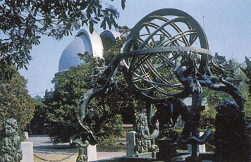

教材文本 · 论述类文本阅读
天文学上的旷世之争
作者通过浑盖之争说明可计算的理论、观测检验和相互批评对于科学发展的作用，并评价中国古代天文学的经验传统。
导读
文体与题材：科学史论述；梳理中国古代宇宙结构学说及浑盖之争。
作者简介：关增建，科学史研究者，《科学史十五讲》作者。本文将天文学理论、测算方法、观测依据与学术争论联系起来说明。
文本出处：选自关增建《科学史十五讲》，北京大学出版社2006年版，教材略有删改。文中保留《晋书》《隋书》天文志及《朱子语类》等古籍引文。
内容脉络：文章由东西方宇宙结构争论引入中国天文学，依次评述天圆地方、宣夜和盖天诸说，继而展开浑天与盖天之间的观测、理论争辩，最后归纳检验标准及争论的历史作用。
内容主旨：作者通过浑盖之争说明可计算的理论、观测检验和相互批评对于科学发展的作用，并评价中国古代天文学的经验传统。
阅读重点：比较各学说的对象、结构和预测能力，恢复反驳所依的观测事实，区分古籍记载、作者评价及历史概括的范围。
原文与随文研读
原文按结构分节；随文内容可定位至对应段落。
问题提出：由中西天文学争论引出宇宙结构解释。
在科学史上，天文学的发展，历来波澜起伏，曲折复杂，扣人心弦。在西方，人们熟知的是哥白尼日心说与托勒密地心说旷日持久的争论，正是这场争论，推动了天文学的发展以及天文学领域哥白尼革命的发生，最终促成了近代科学的建立。殊不知，在东方的中国，在对宇宙结构的认识上，也存在着类似的旷世之争，这就是中国天文学史上著名的浑盖之争。
对宇宙结构的认识，是中国古代天文学的重要内容之一。中国人很早就形成了自己对宇宙形状的认识，一开始，人们主张“天圆地方”，认为天是圆形平盖，在人的头顶上方悬置，地是方的，静止不动。但这种认识并没有形成系统的学说，因为它本身存在着比较明显的漏洞。正因为如此，当曾子的学生单居离向他询问是否果真“天圆地方”时，曾子一针见血地指出：“如诚天圆而地方，则是四角之不掩也。”（《大戴礼记·曾子天圆》）曾子并不否认“天圆地方”说的存在，但他认为那说的不是天地具体形状，而是天地所遵循的规律。他引述孔子之语，把“天圆地方”说成是“天道曰圆，地道曰方”，即天所遵循的规律在性质上属于“圆”，转动不休；地遵循的规律在性质上则属于“方”，安谧静止。孔子师徒的说法，固然可以弥补“天圆地方”说在形式上的缺陷，但这种修补却也使该说丧失了作为一种宇宙结构学说而存在的资格，因为它所谈论的已经不再是天地的具体形状了。
宣夜说评议：比较无限空间设想与数学预测能力。
宣夜之书亡，惟汉秘书郎郗萌记先师相传云：“天了无质，仰而瞻之，高远无极，眼瞀精绝，故苍苍然也。譬之旁望远道之黄山而皆青，俯察千仞之深谷而窈黑，夫青非真色，而黑非有体也。日月众星，自然浮生虚空之中，其行其止皆须气焉。是以七曜或逝或住，或顺或逆，伏见无常，进退不同，由乎无所根系，故各异也。故辰极常居其所，而北斗不与众星西没也。”
文中提到的“辰极”，指的是北极星；“七曜”，指的是日月和金木水火土五大行星。五星在天空的运行，看上去很不规范，它们在恒星背景上有顺行，有逆行，有时候看得见，有时候看不见，速度前后也不一致。宣夜说认为这是由于这些天体是自由飘浮在虚空中的，它们彼此没有联系，没有相互作用，因此彼此的运动相互独立，没有共同的规律可循。天看上去有一定的形体和质地，那是由于它太高了，太广阔了，导致人们在看的时候产生了错觉。天的本质是虚空，所有的天体都自由悬浮在这个虚空之中。
宣夜说主张的是一种无限空间的宇宙图景，认为日月星辰自由飘浮在虚空之中。这与古希腊人的水晶天说完全不同。希腊人认为天是某种特殊材料形成的固体天球，日月星辰分布在不同的球层上。在欧洲历史上，这种固体天球观念根深蒂固，直到16世纪，在第谷出色的天文观测工作的冲击下，人们才逐渐放弃了这种观念。与西方的水晶天说相比，宣夜说的描述似乎更接近宇宙的实际情形，正因为如此，熟知西方天文学发展史的科学史家如李约瑟等在了解了宣夜说的具体内容后，对之给予了很高的评价。
但是，从另一个视角来看，宣夜说的重要性就相形见绌了。从对科学发展的作用来说，该学说只是一种初级的宇宙理论，它没有与数学结合，不能用以编制历法，不能预测日月星辰的运行，一句话，不能给人们提供有用的信息，这决定了它在天文学界必然要处于被边缘化的状态。更重要的是，它在本质上是反理性的，因为它认为天体的运动彼此独立，互不相关，无规律可循。这种主张，杜绝了人们探寻自然规律的可能性，所以，它不利于科学发展，是一种没有前途的学说。正因为如此，到了东汉末年，已经没有人再关注它了。东汉著名学者蔡邕在总结当时天文学界的状况时，一针见血地指出了宣夜说的处境：“宣夜之学，绝无师法。”（《晋书·天文志》）宣夜说被天文学家们所抛弃，是历史的必然。
注释 · 批注 7
郗（xī）萌（生卒年不详）
郗萌〔郗（xī）萌（生卒年不详）〕东汉天文学家。
眼瞀（mào）
眼瞀〔眼瞀（mào）〕眼睛昏花。
精绝
精绝〔精绝〕精神尽竭。
第谷（1546—1601）
第谷〔第谷（1546—1601）〕丹麦天文学家。他曾在汶岛的天文台观测天象20余年。
李约瑟（1900—1995）
李约瑟〔李约瑟（1900—1995）〕英国科学家、科学史专家。著有《中国科学技术史》。
蔡邕（yōng）（133—192）
蔡邕〔蔡邕（yōng）（133—192）〕字伯喈（jiē），陈留圉（yǔ）（今河南杞县西南）人，东汉文学家、书法家，通经史、音律、天文等。
比较使用两种尺度
从另一个视角来看前段就宇宙图景与实际情形的接近程度评价宣夜说，本段转而考察数学化、预测和历法用途。评价变化来自标准变化，须写清各自标准。
盖天说评议：说明结构模型、测算方法和应用价值。
中国古代第一个堪称科学理论的宇宙结构学说是盖天说。与宣夜说相比，盖天说有其经典流布于世，那就是《周髀算经》。此外，《晋书》《隋书》的《天文志》也对盖天说的核心内容有所记载。下面是《晋书·天文志》的有关记载：
其言天似盖笠，地法覆槃，天地各中高外下。北极之下为天地之中，其地最高，而滂沲四隤，三光隐映，以为昼夜。天中高于外衡冬至日之所在六万里，北极下地高于外衡下地亦六万里，外衡高于北极下地二万里。天地隆高相从，日去地恒八万里。日丽天而平转，分冬夏之间日所行道为七衡六间。每衡周径里数，各依算术，用句股重差推晷影极游，以为远近之数，皆得于表股者也。
盖天说主张天地是两个中央凸起的平行平面，天在上，地在下，天离地的距离是8万里，日月星辰围绕着北极依附在天壳上运动。太阳依附在天壳上运行的轨道可分为七衡六间，每衡每间的距离，都可以用立竿测影的方法，运用勾股定理和其他数学方法推算出来。天地之间的距离，也是用这种方法推算出来的。
盖天说突破了人们日常观测中形成的天是个半球的生活经验，提出了平天平地说，并且找到了适合这种模型的数学方法，那就是在立竿测影基础上用勾股定理和相似三角形对应边成比例的性质，测算各种天文数据。该说能够解释人们日常生活中见到的各种天象，能够预测日月星辰的运行，还能够编制历法，满足社会需求。该说构思的七衡六间，可以用来准确地预报二十四节气，具有很强的应用价值。由此，该说能够为人们提供有价值的信息，它对日月星辰运行的预测、对二十四节气的预报，能够接受观测实践的检验，因此，它是富有科学意义的宇宙结构理论，尽管它对宇宙结构本身的描述是错误的。
注释 · 批注 9
《周髀（bì）算经》
《周髀算经》〔《周髀（bì）算经》〕原名《周髀》，是长期积累编纂而成的数理天文学著作，成书于西汉或更早时期。
槃（pán）
槃〔槃（pán）〕同“盘”，木盘，古代盛水器皿。
滂沲（tuó）
滂沲〔滂沲（tuó）〕即“滂沱”，广大的样子。
四隤（tuí）
四隤〔四隤（tuí）〕四边向下倾斜。隤，下降。
丽天
丽天〔丽天〕附着于天。丽，依附。
句（gōu）股
句股〔句（gōu）股〕数学名词，即“勾股”。
重（chóng）差
重差〔重（chóng）差〕汉代天文学家测望太阳高、远的方法，后发展为中国传统数学主要的测望方法。
晷（guǐ）影
晷影〔晷（guǐ）影〕晷表的投影。晷，日晷，测度日影以确定时刻的仪器。
浑盖之争发端：从修历分歧推进到观测与推论的比较。
盖天说在汉武帝时期遇到了浑天说的有力挑战。事情起源于历法编制。当时太史令司马迁向汉武帝上书，建议修订一部新的历法，叫作《太初历》。汉武帝采纳了他的建议，命令他组织学者，制订《太初历》。司马迁组织的修历队伍工作了一段时间后，参加者之间观点上出现了分歧，来自四川的民间天文学家落下闳提出了一种新的主张：天是个圆球，天包着地，天大而地小。这种主张，后来被人们称为浑天说。浑天说与司马迁等信奉的盖天说本质上完全不同，盖天说主张天在上，地在下，天地等大；而浑天说主张天在外，地在内，天大地小。双方主张的宇宙结构不同，所采用的测量仪器和测量方法也不同，这就导致了在修历过程中的争论。双方争论得非常激烈，以至于到了不能在一起工作的程度。对此，汉武帝采用的解决办法是让他们分别制订自己心仪的历法，然后拿出来接受检验，谁的历法更符合实际，就用谁的历法。最后的结果是浑天说者邓平等人制订的历法与实际天象符合得最好，于是就采纳了邓平的历法。这就是中国历史上著名的《太初历》的由来。
《太初历》的制订问题画上了句号，但由修订《太初历》所引发的浑盖之争却拉开了帷幕。在此后的一千多年的时间里，究竟是浑天说正确，还是盖天说合理，天文学界的争论一直不曾停歇，总的趋势是信奉浑天说的人越来越多，浑天说逐渐成为天文学界对宇宙结构认识的主流。
浑盖之争涉及与有关宇宙结构问题的方方面面。西汉末年，著名学者扬雄先是相信盖天说，后来在与另一位学者桓谭的争论中，被桓谭所说服，转而信奉浑天说。他经过细致思考，发现了盖天说的诸多破绽，撰写了著名的《难盖天八事》一文，从观测依据到数理结构等八个方面，逐一对盖天说作了批驳。比如，他提出，按盖天说的说法，天至高，地至卑，太阳依附在天壳上运动，也是高高在上的，人之所以看到太阳从地平线下升起，是由于太阳太高了，导致人产生了视觉错误的缘故。但是，即使人眼会因观察对象的距离远而产生视觉错乱，水平面和光线的传播是客观的，它们是不会出错的，那么就在高山顶上取一个水平面，以之判断日的出没。实验证明太阳确实是从水平面之下升起的，光线也是从下向上传播的，这与盖天说的推论完全相反，证明盖天说是错误的。这是扬雄从观测依据的角度对盖天说所作的批驳。整体来说，他从八个方面对盖天说所作的批驳，有理有据，是盖天说无法辩解的。

句注 · 注释 5
落下闳（hóng）（前156—前87）
落下闳〔落下闳（hóng）（前156—前87）〕西汉天文学家。
邓平（生卒年不详）
浑天说者邓平等人〔邓平（生卒年不详）〕西汉天文学家。曾任太史丞。
历史仪器与宇宙模型
天是个圆球，天包着地，天大而地小“浑天”在此描述包围大地的天球，并非已经提出近代意义的地球球体及太阳中心体系。作者随后指出浑天说仍有水中出没和缺乏地球观念的困难。
“天在外，地在内”表明天球包围大地的模型关系；后文讨论太阳出没于水时，又暴露了模型对大地、海洋关系的理解困难。复述理论可先交代其空间结构，再列它能解释的现象及尚待说明的问题，三者分开便能保持评价层次。
扬雄（前53—18）
扬雄先是相信盖天说〔扬雄（前53—18）〕字子云，蜀郡成都（今属四川）人，西汉文学家、哲学家。
桓谭（约前20—56）
桓谭〔桓谭（约前20—56）〕字君山，沛国相（今安徽濉溪西北）人，东汉哲学家、经学家。
相互批评：围绕日出日落观测与水中出没解释展开争辩。
旧说，天转从地下过。今掘地一丈辄有水，天何得从水中行乎？甚不然也。（《隋书·天文志》）
王充的责难是颇有说服力的，因为按当时的人的理解，太阳是依附在天球上的，天从水中出入，就意味着太阳这个大火球也要从水中出入，这是不可思议的。面对王充的责难，浑天说者的态度是，只要有充足的证据证明太阳是从地平线下升起，又落到地平线下面，它即使出入于水中又有何妨？晋朝的葛洪就针对王充的责难，提出了判断浑天说是否成立的判据：
葛洪以太阳落入地平线时呈现出“横破镜”的状态这一事实作为依据，指出这种现象与盖天说的推论相反，证明盖天说是错误的。他提出的判据是有说服力的。从观测的角度，只能承认浑天说是较为正确的。至于太阳从水中出没的问题，南北朝时期的浑天家何承天给出了自己的解释：
何承天的构思很有意思，他的辩解，表现了浑天说者为修补自己理论上的漏洞所作的努力。但这种努力，并未起到太大的作用，这是因为浑天说有一个根本的缺陷——它没有地球观念，没有意识到海洋也是大地的一部分。
句注 · 注释 · 札记 9
王充（27—约97）
王充就曾〔王充（27—约97）〕字仲任，会稽上虞（今属浙江）人，东汉哲学家。
葛洪（约281—341）
晋朝的葛洪〔葛洪（约281—341）〕字稚川，丹阳句容（今属江苏）人，东晋思想家、医学家。
观测如何检验模型
如横破镜之状先记录太阳落入地平线时的实际形状，再写盖天模型预期的遮没方向。两者不符才构成反驳。
日落判据
若如王生之言，日转北去者意为如果如王充所说，太阳转向北方而去，那么完全隐没前应先呈竖向缺损的形状，不能呈横向缺损的形状。“若”引出假设，“宜”表示按该假设应当出现的结果，随后用观察到的日落形态检验。
何承天（370—447）
浑天家何承天〔何承天（370—447）〕东海（今山东郯城）人，南朝宋思想家、天文学家。
趣
由高趣下〔趣〕趋向，奔赴。
光曜
光曜〔光曜〕光辉照耀。曜，照耀。
炎炽
炎炽〔炎炽〕炽热。
“宜”引出可比较的预期
宜先如竖破镜之状，不应如横破镜也。葛洪先写太阳下沉时横向逐渐缺损，再由“若如”引入王充所说的北转情形，用“宜”推出应有的竖向缺损。横破与竖破成为同一现象上的不同预期，比较的对象因而清楚。读古文引证时，可先拆出假设、预期和观察三项。
争论延续：诸说、仪器与后世评议扩大讨论范围。
浑盖双方的激烈争辩，引起了人们的关注。在这场争论的影响下，更多的人投入到了对宇宙结构问题的研究之中，提出了更多的宇宙结构学说。例如晋朝的虞喜就提出了《安天论》，虞耸提出了《穹天论》，东吴的姚信则提出了《昕天论》，一时间，诸说蜂起，人们辩论不休，隋朝的刘焯对之有形象描述：
盖及宣夜，三说并驱；平、昕、安、穹，四天腾沸。（《隋书·天文志》）
通过刘焯的描述，我们不难想象古人讨论宇宙结构问题的热闹程度。
甚至一直到了12世纪的南宋，大学者朱熹仍然在关注着浑天说和盖天说究竟谁是正确的这一问题。他的态度很明确：
有能说盖天者，欲令作一盖天仪，不知可否。或云似伞样。如此，则四旁须有漏风处，故不若浑天之可为仪也。（《朱子语类》卷第二）
朱熹是从天文观测仪器的制作角度反对盖天说的。他的话表明，从公元前2世纪浑盖之争登上历史舞台，一直到公元12世纪，学者们仍然在讨论浑天说和盖天说的孰是孰非。中国古人对天体结构问题的关注程度，由此可见一斑。
历史总结：归纳观测检验原则及争论的学术影响。
纵观中国古代的这场旷世学术之争，我们发现，古人在这场争论中，秉持着一个重要原则：判断一个学说是否正确，关键在于其是否符合实际情况，而不是看其是否遵循某种先验的哲学观念。比如，古人一直认为天地是由阴阳二气生成的，从这个观念出发，如果承认这一前提，就得承认盖天说是正确的，因为阳气轻清，阴气重浊，轻清者上浮为天，重浊者下凝为地，这样所推出的，必然是盖天说所主张的宇宙结构模式。但古人在争论中，并不以阴阳学说作为判断依据，他们所关注的，是究竟哪种学说更符合观测结果。对此，南北朝时期著名科学家祖暅的一段话可作代表：
祖暅比较了浑盖双方的差异，在查阅典籍记载的基础上，通过实地天文观测，并使用仪器进行校验，发现浑天说更符合实际，这才得出了浑天说可信这一结论。浑盖之争过程中表现出来的重视实际校验的这种做法，是中国古代天文学的一个优秀传统。这一传统与希腊天文学的某些特点有明显的不同。
除了不以先验的哲学信念为依据判断是非之外，浑盖之争在其他方面的表现也完全符合学术发展规律。政治和宗教等非学术因素没有介入到这场争论之中。南北朝时，南朝的梁武帝偏爱盖天说，曾集合群臣，公开宣讲盖天说。对于他的主张，天文学家中不以为然者大有人在，但梁武帝并未采用暴力手段迫害那些不相信盖天说者。佛教传入中国后，佛教主张的宇宙结构模式，与浑天说亦不一致，但中国历史上从未有过以佛教学说为依据，强行要求人们放弃自己所信奉的宇宙结构学说的事例。宗教因素没有成为裁决浑盖是非的依据，也没有人因为信奉某种宇宙理论而受到政治或宗教上的迫害。这些，无疑都是浑盖之争中值得肯定的地方。
持续了一千三四百年之久的浑盖之争，是中国天文学史上的一件大事，它贯串于这个时期中国天文学的发展过程之中，促成了与之相关的众多重要科学问题的解决，促成了中国古代天文学诸多重要成就的获得。例如，被后人奉为中国古代历法的圭臬的《太初历》，是浑盖之争的直接产物；又如，在中国历史上赫赫有名的“小儿辩日”问题，在浑盖之争过程中得到了合理的解答；再如，在中国数学史上著名的“勾股定理”以及相关的测高望远之术，是在浑盖之争中为发展天文测算方法而形成的；更如，唐代僧一行组织的天文大地测量，是为了解决浑盖之争的一个重要命题而得以实施的；还如，中国天文仪器的发展，亦与浑盖之争息息相关；……类似例子，不胜枚举，这表明浑盖之争在中国历史上有着延续时间长、参与人员多、涉及面广、讨论内容丰富、后续影响大等特点，它表现了中国古人对宇宙问题的关注程度，体现了中国古人对待科学问题的态度。这种规模和深度的争论即使在世界文明史上亦不多见。我们完全有理由说，浑盖之争，作为中国历史上最引人注目的学术论争之一，将永载中华文明发展的史册。
注释 · 评议 7
祖暅（gèng）（456—536）
科学家祖暅〔祖暅（gèng）（456—536）〕一作祖暅之，字景烁，范阳遒县（今河北涞水）人，南朝梁天文学家、数学家，祖冲之之子。
四维
傍瞩四维〔四维〕四方。
漏
晷漏〔漏〕古代计时用的漏壶。
梁武帝（464—549）
南朝的梁武帝〔梁武帝（464—549）〕即萧衍，字叔达，南兰陵（治今江苏常州西北）人，南朝梁的建立者，502—549年在位。
历史概括的范围
政治和宗教等非学术因素没有介入到这场争论之中这是作者对所述浑盖之争的历史评价。梁武帝及佛教事例支持其局部讨论；若研究整个中国科学史中政治、宗教与学术的关系，还须扩大时期、材料和问题范围。
一行（673—727）
唐代僧一行〔一行（673—727）〕本名张遂，巨鹿（今属河北）人，唐代天文学家。
文献与仪器的分工
在查阅典籍记载的基础上，通过实地天文观测，并使用仪器进行校验查典籍使论者能够掌握前说，实地观测提供天象材料，仪器校验则让比较有较稳定的尺度。文章将这些步骤合述为获得可信判断的条件。理解“符合实际”时，可依照材料取得、比较方式和所得判断分别展开，避免以一句原则替代研究过程。
科学文本研读
先明确作者所讨论的问题和关键概念，再将观察材料、解释机制与结论逐项对应。对历史科学文献，记录写作时代、概念范围和判断语气；拓展阅读使用相关学科资料，注明证据与结论的适用条件。
- 圈定待解释现象和基本概念，列出它们之间的关系。
- 区分观察记录、概括、推测和价值判断，逐项找回对应语句。
- 恢复主要推理及必要前提，比较不同解释面对同一材料的效果。
- 写一则200字左右的提要，保留核心观点、主要根据和必要限定；再与原文核对。
科学史资料研习
围绕理论、经验和学术环境进一步阅读科学史资料。本文提供具体的浑盖模型、观测和争论事例，历史概括还须同相关时期的其他材料比较。
- 将宣夜、盖天、浑天分别按结构假说、数学测算、观测检验和实际用途列入表格，说明古代天文学中经验与理论怎样联系。
- 整理作者关于政治、宗教未成为裁决标准的事例与概括，分别记录其涉及的时期、人物和所能支持的范围。
- 从可靠古籍整理本或科学史著作补充同一问题的材料，区分作者评价、史料记载和自己提出的判断，写一则研究札记。
研读题
围绕原文的语言、篇章关系及论述或叙事内容研读，结合具体语句说明判断和理由。
第1题 · 评价标准
作者对宣夜说与盖天说的评价使用了哪些标准？为什么会有不同结论？
参考答案1展开 / 收起
参考作答
- 宇宙图景标准：宣夜说提出无限空间和天体悬浮，相对固体天球说更接近部分宇宙图景，因此受到肯定。
- 预测能力标准：作者批评宣夜说没有数学结合、不能预测和编历，而盖天说具有可测算和可检验的应用能力。
- 局部价值与整体解释：盖天说的结构描述虽有错误，某些计算和预测仍有科学史价值；两个标准不能相互替代。
审题与考查点
比较形象接近实际、数学预测、观测检验等不同评价维度。
文本分析
宇宙图景标准查看证据 ↗
文本依据：“宣夜说主张的是一种无限空间的宇宙图景”；“宣夜说的描述似乎更接近宇宙的实际情形”。
肯定的对象是所描述的空间和天体位置，不是所有运动解释均被证明。“似乎更接近”仍保留比较语气。
预测能力标准查看证据 ↗
文本依据：“它没有与数学结合，不能用以编制历法”；“它对日月星辰运行的预测、对二十四节气的预报，能够接受观测实践的检验”。
同一标准下对比理论能否给出可核对的结果，说明作者关心科学知识的组织和检验。写“有用”时须明确是预报、测算与历法用途。
局部价值与整体解释查看证据 ↗
文本依据：“具有很强的应用价值”；“尽管它对宇宙结构本身的描述是错误的”。
不同结论对应不同问题。能够部分预测不保证结构完全正确，图景某些方面接近实际也不保证理论具有充分预测能力。
知识点
概念划分：概念划分是依一定标准，把一个概念的外延分为若干较小类别的逻辑方法。被划分的整体、划分标准和所得类别需要明确；科学文本中的证据与假说：科学文本中的观察结果是研究所得的记录，假说是为解释现象而提出、需要进一步检验的判断，预测则说明在一定条件下预期会出现什么结果；论点的限定条件：论点的限定条件说明一个判断适用于什么对象、时间和情境，以及结论达到何种程度。明确限定有助于准确表达主张并接受检验。
解题方法
分别列出两说的结构主张、数学方法和预测结果，用同一问题对照，再说明有限肯定的范围。
易误辨析
把作者评价压成“一说全对、一说全错”会混淆标准；“科学意义”与结构真实程度需要分别解释。
答案组织与检核
三点分别说明图景、预测、有限评价，各有原句；避免将应用价值提升为全部结构的证实。
第2题 · 观测反驳
扬雄和葛洪怎样以观测批驳盖天说？两种论证的共同方式是什么？
参考答案2展开 / 收起
参考作答
- 日出方向判据：扬雄用山顶水平面考察太阳出没，观察太阳从水平面下升起，光从下向上传播，与盖天说推论相反。
- 日落形态判据：葛洪观察到太阳落下时呈横向缺损形态；若按太阳转北隐没的解释，应呈竖向缺损，实际形态与预期不合。
- 预期与事实比较：二者都从学说导出可以观察的预期，再与实际天象比较，以不符合指出模型的问题。
审题与考查点
辨明理论预期、观察结果及不相符合的具体关系。
文本分析
日出方向判据查看证据 ↗
文本依据：“就在高山顶上取一个水平面”；“太阳确实是从水平面之下升起的，光线也是从下向上传播的”。
水平面提供比较基准，光传播方向提供可观察结果。作者据此说明以客观基准检验视觉错误的辩解。
日落形态判据查看证据 ↗
文本依据：“如横破镜之状”；“宜先如竖破镜之状，不应如横破镜也”。
判据取决于隐没方向导致的可区分形状。两种破镜的比拟帮助呈现这种差异，观察结果使其中一个结构解释面临反证。
预期与事实比较查看证据 ↗
文本依据：“这与盖天说的推论完全相反”；“从观测的角度，只能承认浑天说是较为正确的”。
理论含义须先转化为观测判据，随后才能讨论支持或反驳。局部反驳盖天说，也不自动解决浑天说的所有困难。
知识点
反驳与回应：反驳是针对某个主张、论据或推理提出理由，说明其不能成立或需要修正。回应则是在质疑出现后，澄清主张、补充依据或调整适用范围；科学文本中的证据与假说：科学文本中的观察结果是研究所得的记录，假说是为解释现象而提出、需要进一步检验的判断，预测则说明在一定条件下预期会出现什么结果；文本证据与阅读推论：文本证据是能够支持某一理解的具体词句、叙事事实或结构关系。阅读推论则是依据这些材料，并借助适当的语言知识和事理作出的解释。
解题方法
分别按模型预期、观测结果和不符关系组织两个事例，最后概括共同检验方式和结论范围。
易误辨析
只写二人观察细致缺少反驳逻辑；“较为正确”也不能改成浑天说已完全正确。
答案组织与检核
日出方向与日落形状两组判据齐全，最后说明理论与事实的关系，保留作者的比较程度。
第3题 · 理论修正
浑天说面对王充的责难，怎样辩护和修补？文章为何仍指出它有根本缺陷？
参考答案3展开 / 收起
参考作答
- 责难指出矛盾：浑天说若认为天球经过地下之水，而太阳依附天球，则须解释火球如何出入水中。
- 观测继续支持：浑天说者诉诸太阳确从地平线下升落的观测，葛洪进一步以日落形态反驳另一模型。
- 补充解释仍不足：何承天以百川补水说明太阳入水的损耗，作者认为这种修补未消除缺乏地球观念的结构困难。
审题与考查点
区分观测支持、理论解释困难与辅助解释的作用。
文本分析
责难指出矛盾查看证据 ↗
文本依据：“地在内，漂浮水上”；“太阳这个大火球也要从水中出入”。
王充将模型的两个主张合并考察，指出按当时理解产生的困难。这是理论内部解释问题，与日出方向的观测问题相关而不同。
观测继续支持查看证据 ↗
文本依据：“只要有充足的证据证明太阳是从地平线下升起”；“葛洪以太阳落入地平线时呈现出‘横破镜’的状态这一事实作为依据”。
一个理论有未解决的机制困难，并不意味着所有支持观测随即失效；应比较两说各自符合哪些事实、解释哪些问题。
补充解释仍不足查看证据 ↗
文本依据：“百川归注，足以相补”；“它没有地球观念，没有意识到海洋也是大地的一部分”。
辅助解释试图维持原模型，但需要独立依据并回应根本结构问题。文章将有趣构思与实际解释效果分别评价。
知识点
反驳与回应：反驳是针对某个主张、论据或推理提出理由，说明其不能成立或需要修正。回应则是在质疑出现后，澄清主张、补充依据或调整适用范围；说明对象、方法与顺序：说明方法是为使读者理解对象的性质、结构或原理而采用的表达方式，如下定义、分类、举例、比较和列数字。说明顺序则是材料展开的次序；科学文本中的证据与假说：科学文本中的观察结果是研究所得的记录，假说是为解释现象而提出、需要进一步检验的判断，预测则说明在一定条件下预期会出现什么结果。
解题方法
先准确恢复王充质疑所依的模型，再区分观测辩护和补水解释，最后说明作者认为仍未解决的问题。
易误辨析
将修补称为已证实的新理论，会忽视作者对作用的评价；承认局部支持也不能取消根本困难。
答案组织与检核
三点分别对应质疑、观测与修补，写出前提和结果之间的关系；不可只罗列人物。
第4题 · 争论意义
按文章的论述，浑盖之争如何推动中国古代天文学？怎样组织这一历史评价？
参考答案4展开 / 收起
参考作答
- 促成方法比较：修订《太初历》时不同方案分别接受实际天象检验，争论使模型、测量方法和历法效果可供比较。
- 发展观测与仪器：扬雄等提出观测判据，朱熹重视仪器制作，祖暅以仪象、晷漏校验，多种方法共同促进理论讨论。
- 形成历史评价：作者据参与、延续、讨论和后续成果归纳其文明史价值，强调实际检验与公开学术争辩的传统。
审题与考查点
从历法、理论、观测和仪器事例推导分层评价，界定作者概括的范围。
文本分析
促成方法比较查看证据 ↗
文本依据：“让他们分别制订自己心仪的历法”；“谁的历法更符合实际，就用谁的历法”。
争论的作用由实际工作和方案检验显示，不只由持续时间长推出。需要将冲突如何组织成可比较结果说明清楚。
发展观测与仪器查看证据 ↗
文本依据：“欲令作一盖天仪，不知可否”；“校之以仪象，覆之以晷漏”。
理论争议促使人提出可操作的问题和工具，观测材料又反过来约束理论判断。仪器与方法的进步应有原文例子。
形成历史评价查看证据 ↗
文本依据：“延续时间长、参与人员多、涉及面广、讨论内容丰富、后续影响大”；“浑盖之争过程中表现出来的重视实际校验的这种做法”。
先由具体事例说明贡献，再归纳作者的历史评价。末段涉及成就起源及政治宗教关系的更广判断，进一步研究须逐项核查相关史料。
知识点
归纳概括与证据强度：归纳概括是从若干具体材料中提炼共同性质或一般判断的推理活动。材料的数量、差异、代表性和反例情况，共同影响概括的可信程度；词义与语境：语境是语言表达所处的上下文和交际情境。词在具体句中的意义，要结合搭配、句法关系、所指对象及表达目的来确定；信息来源与证据核验：信息来源核验是检查资料由谁、在何时、通过何种方式生成，并判断其对当前问题有多大证明力的过程。来源可靠性与具体判断的正确性都需考察。
解题方法
从历法、观测与仪器三类事实出发解释具体作用，再区分作者总结和需要外部史料支持的广泛判断。
易误辨析
分别列出论争引发的观测问题、工具改进与理论修正，说明各项事例怎样表现思想讨论同科学进展的联系。
答案组织与检核
评价须有事例及作用机制，并明确是对本文的历史论述作归纳，保持材料范围与概括范围相称。
篇目与册次
研习拓展
研习题1 · 观测支持与补充解释
葛洪的日落判据与何承天的百川补水解释，各自怎样回应对浑天说的质疑？它们在文中的证据作用有何差别？
讨论参考1展开 / 收起
参考作答
- 葛洪以日落形态比较预期：他用日落时横破镜的形态，对照太阳若向北转应出现竖破镜形态的预期，借可观察的差异反驳盖天说，支持浑天说对日出没的解释。
- 何承天增加补水设想以修补困难：他设想太阳入水使水焦竭，百川入海恰能补充，以解释太阳出入于水而水量不变。文章将其作为修补模型的努力，再指出缺少地球观念的根本问题仍在。
审题与考查点
辨认两段要解决的问题，再区分以观察比较预期和以新增设想说明困难的论证方式。
文本分析
葛洪以日落形态比较预期查看证据 ↗
同一日落现象在两种运动设想下产生不同预期，横、竖之分使判断能够接受观察检验。本文因而称这个判据有说服力，并限定为“从观测的角度”较为正确。
何承天增加补水设想以修补困难查看证据 ↗
这一段把先前未说明的水量平衡引入解释，本文没有给出独立测量太阳耗水、百川补水的材料；相较前一判据，其功能侧重填补理论内部的困难。
知识点
文本证据是能够支持某一理解的具体词句、叙事事实或结构关系。阅读推论则是依据这些材料，并借助适当的语言知识和事理作出的解释。
解题方法
分别写出两段面对的质疑、使用的材料和得出的解释，再检查哪一段提供了可观察的不同预期，哪一段增设了内部机制。
易误辨析
评价须随文章所给材料区分层次：局部观测支持、内部修补和总体宇宙结构分别有待说明的内容。
答案组织与检核
两个论证都要交代问题与回应，比较结论须保留“从观测角度”“较为”等范围词。
参考文献
- 关增建：选自关增建《科学史十五讲》，北京大学出版社2006年版，教材略有删改。文中保留《晋书》《隋书》天文志及《朱子语类》等古籍引文。
- 教育部组织编写：《普通高中教科书·语文·选择性必修下册》，人民教育出版社，第105—112页。
本文关联
文本证据与阅读推论3 处
阅读条目 →测量所依赖的模型 ↗文本证据与解释。
知识点 ↗反驳与回应：反驳是针对某个主张、论据或推理提出理由，说明其不能成立或需要修正。回应则是在质疑出现后，澄清主张、补充依据或调整适用范围；科学文本中的证据与假说：科学文本中的观察结果是研究所得的记录，假说是为解释现象而提出、需要进一步检验的判断，预测则说明在一定条件下预期会出现什么结果；文本证…
知识点 ↗文本证据与解释。
概念划分1 处
阅读条目 →知识点 ↗概念划分：概念划分是依一定标准，把一个概念的外延分为若干较小类别的逻辑方法。被划分的整体、划分标准和所得类别需要明确；科学文本中的证据与假说：科学文本中的观察结果是研究所得的记录，假说是为解释现象而提出、需要进一步检验的判断，预测则说明在一定条件下预期会出现什么结果；论点的限定条件：论点的…
科学文本中的证据与假说3 处
阅读条目 →知识点 ↗概念划分：概念划分是依一定标准，把一个概念的外延分为若干较小类别的逻辑方法。被划分的整体、划分标准和所得类别需要明确；科学文本中的证据与假说：科学文本中的观察结果是研究所得的记录，假说是为解释现象而提出、需要进一步检验的判断，预测则说明在一定条件下预期会出现什么结果；论点的限定条件：论点的…
知识点 ↗反驳与回应：反驳是针对某个主张、论据或推理提出理由，说明其不能成立或需要修正。回应则是在质疑出现后，澄清主张、补充依据或调整适用范围；科学文本中的证据与假说：科学文本中的观察结果是研究所得的记录，假说是为解释现象而提出、需要进一步检验的判断，预测则说明在一定条件下预期会出现什么结果；文本证…
知识点 ↗反驳与回应：反驳是针对某个主张、论据或推理提出理由，说明其不能成立或需要修正。回应则是在质疑出现后，澄清主张、补充依据或调整适用范围；说明对象、方法与顺序：说明方法是为使读者理解对象的性质、结构或原理而采用的表达方式，如下定义、分类、举例、比较和列数字。说明顺序则是材料展开的次序；科学文本…
论点的限定条件1 处
阅读条目 →知识点 ↗概念划分：概念划分是依一定标准，把一个概念的外延分为若干较小类别的逻辑方法。被划分的整体、划分标准和所得类别需要明确；科学文本中的证据与假说：科学文本中的观察结果是研究所得的记录，假说是为解释现象而提出、需要进一步检验的判断，预测则说明在一定条件下预期会出现什么结果；论点的限定条件：论点的…
反驳与回应2 处
阅读条目 →知识点 ↗反驳与回应：反驳是针对某个主张、论据或推理提出理由，说明其不能成立或需要修正。回应则是在质疑出现后，澄清主张、补充依据或调整适用范围；科学文本中的证据与假说：科学文本中的观察结果是研究所得的记录，假说是为解释现象而提出、需要进一步检验的判断，预测则说明在一定条件下预期会出现什么结果；文本证…
知识点 ↗反驳与回应：反驳是针对某个主张、论据或推理提出理由，说明其不能成立或需要修正。回应则是在质疑出现后，澄清主张、补充依据或调整适用范围；说明对象、方法与顺序：说明方法是为使读者理解对象的性质、结构或原理而采用的表达方式，如下定义、分类、举例、比较和列数字。说明顺序则是材料展开的次序；科学文本…
说明对象、方法与顺序1 处
阅读条目 →知识点 ↗反驳与回应：反驳是针对某个主张、论据或推理提出理由，说明其不能成立或需要修正。回应则是在质疑出现后，澄清主张、补充依据或调整适用范围；说明对象、方法与顺序：说明方法是为使读者理解对象的性质、结构或原理而采用的表达方式，如下定义、分类、举例、比较和列数字。说明顺序则是材料展开的次序；科学文本…
归纳概括与证据强度1 处
阅读条目 →知识点 ↗归纳概括与证据强度：归纳概括是从若干具体材料中提炼共同性质或一般判断的推理活动。材料的数量、差异、代表性和反例情况，共同影响概括的可信程度；词义与语境：语境是语言表达所处的上下文和交际情境。词在具体句中的意义，要结合搭配、句法关系、所指对象及表达目的来确定；信息来源与证据核验：信息来源核验…
词义与语境1 处
阅读条目 →知识点 ↗归纳概括与证据强度：归纳概括是从若干具体材料中提炼共同性质或一般判断的推理活动。材料的数量、差异、代表性和反例情况，共同影响概括的可信程度；词义与语境：语境是语言表达所处的上下文和交际情境。词在具体句中的意义，要结合搭配、句法关系、所指对象及表达目的来确定；信息来源与证据核验：信息来源核验…
引用本文
选择性必修下册单元研习6 处
阅读条目 →任务1 · 科学文章的概念与论证 ↗课文研读：自然选择的证明 · 宇宙的边疆 · 天文学上的旷世之争。
任务2 · 科学长句的层次分析 ↗课文研读：自然选择的证明 · 宇宙的边疆 · 天文学上的旷世之争。
任务3 · 科学文章提要 ↗课文研读：自然选择的证明 · 宇宙的边疆 · 天文学上的旷世之争。
任务4 · 科学内容的多种呈现 ↗课文研读：自然选择的证明 · 宇宙的边疆 · 天文学上的旷世之争。
任务5 · 自然科学拓展阅读 ↗课文研读：自然选择的证明 · 宇宙的边疆 · 天文学上的旷世之争。
任务6 · 读书报告的修订 ↗课文研读：自然选择的证明 · 宇宙的边疆 · 天文学上的旷世之争。
测量所依赖的模型
运用勾股定理和其他数学方法推算出来盖天说把日地关系安置在既定空间模型中，再由立竿测影和数学关系推算距离。数据与模型相互依存，几何计算的成立还需要相应空间假设适合实际。联系后文观测反驳，可看到科学理论的评价既涉及计算方法，也涉及经验符合程度。
文本证据与解释。